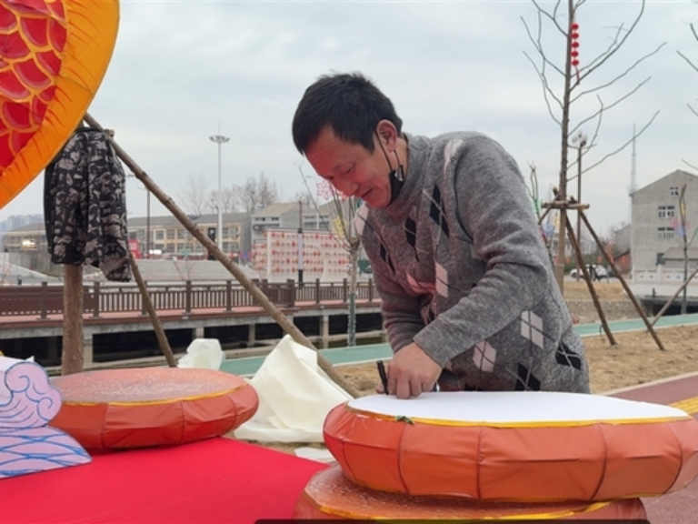
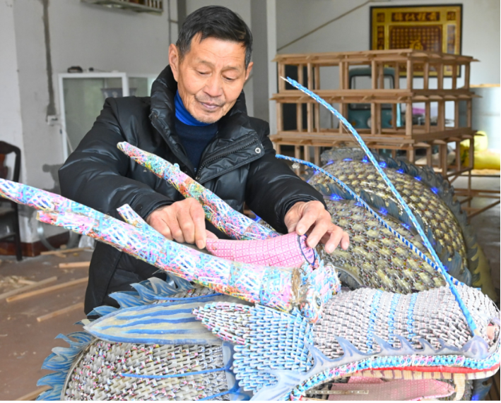
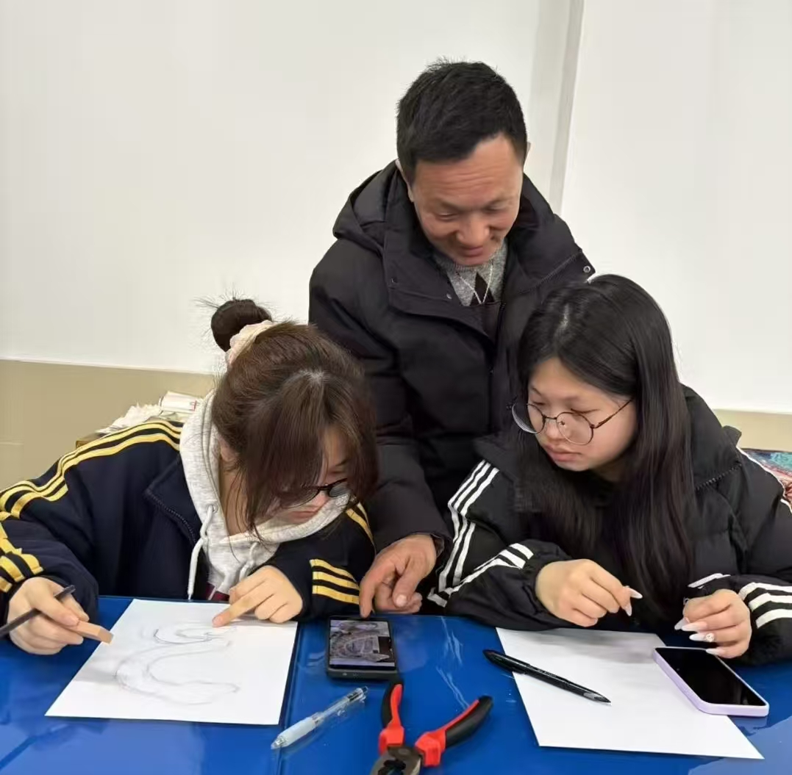
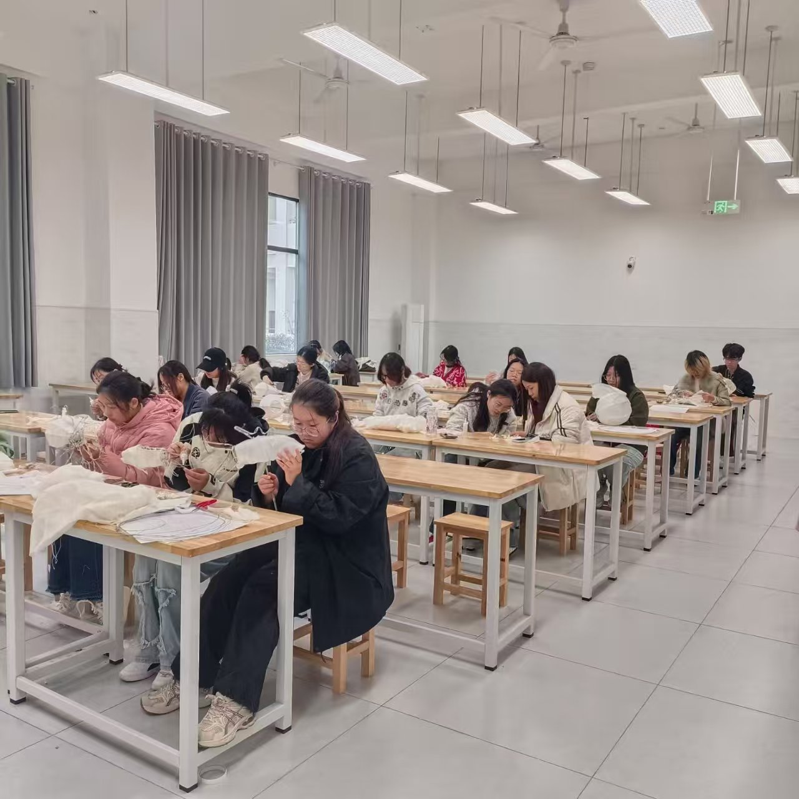
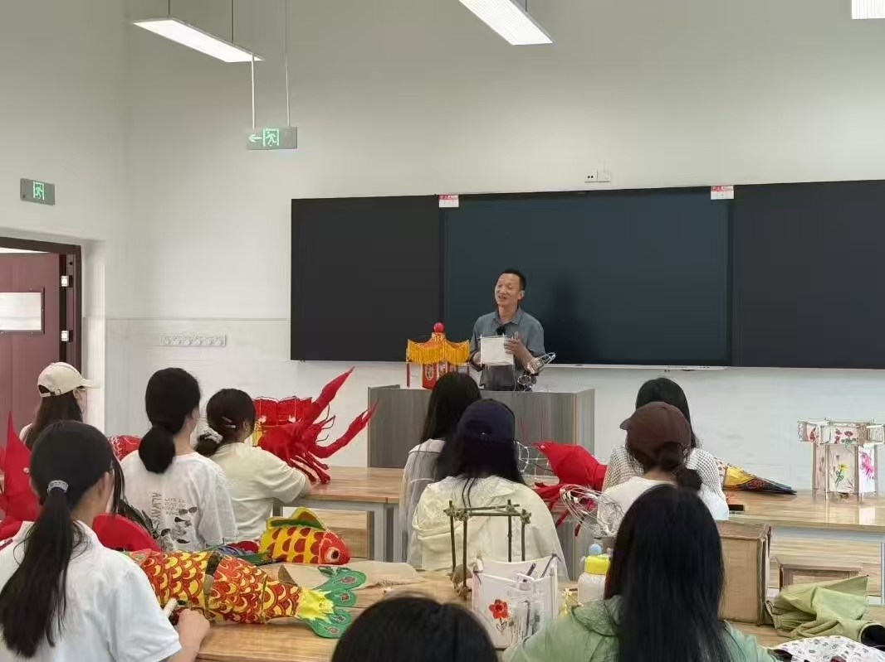
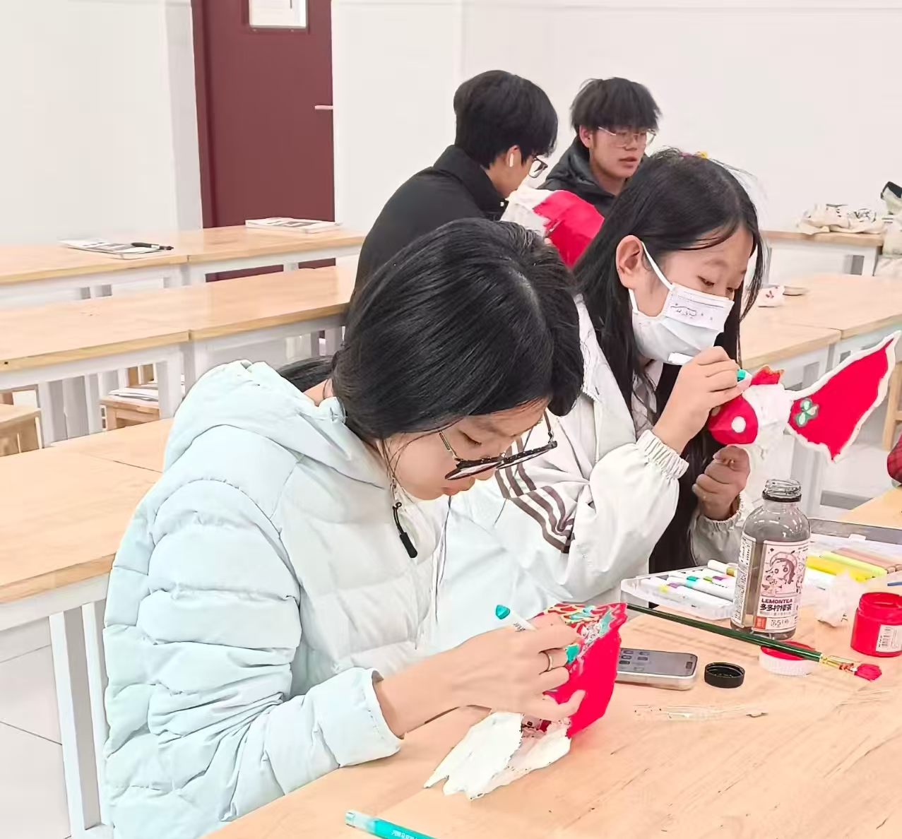

花灯传承人 · 岁月留声
彭先金

潜江花灯市级非遗传承人，湖北潜江竹根滩人，现居园林街道徐角社区。他自幼浸润于元宵灯会氛围，早年拜师学艺，精通花灯制作全套工序，尤其擅长大型灯组设计。他秉持“传统为本、创新为用”理念，融合传统工艺与现代技术，打造的《潜江海马》灯组成为2025年潜江灯会爆款；常年以家庭+师徒模式传承技艺，带动7位家人投身其中，免费推广花灯技艺，是潜江花灯文化的核心守护者与推广者。
张克华

潜江市市级非物质文化遗产（纸折花瓶）代表性传承人，约73岁，潜江市龙湾镇柴铺村6组人。他学仿古建筑工程出身，精通木工、扎架、手绘等传统工艺，折纸、扎灯技艺源自家族传承，自爷爷辈传下。其核心绝活是扑克牌折纸艺术与传统花灯制作，代表作品有“玉龙盘柱”抱柱灯、“千古章华灯”，常年以师带徒形式授艺，坚持纯手工制作，承接多地花灯制作任务，多次参与潜江灯会及非遗展演，秉持手工艺术无价的创作理念，守护传承本土非遗文化。
程崇尚

1945年生，潜江花灯市级非遗代表性传承人，潜江花灯程氏家族第四代传人，也是潜江灯会1978年恢复以来的核心策划者与组织者。他出身手工业者家庭，自幼受家族技艺熏陶，精通多种传统花灯工艺，还融入现代技术创新，代表作品有《鹬蚌相争灯》《麒麟送子》等。其作品曾赴多国巡展，他培养家族传承梯队，开展非遗教学，参与制定制作规范，为潜江花灯传承、创新及申遗提供重要支撑，现任潜江市花灯研究会副会长。
传承人专访 · 声影留存
薪火相传，不负韶华
从张克华的手工坚守、程崇尚的承上启下到彭先金的守正创新，三位潜江花灯传承人的故事，是一部潜江花灯的发展史，更是一部中国非遗技艺的传承史。非遗的传承，从来不是墨守成规的复制，而是在坚守中创新，在创新中坚守。 老一代传承人张克华，以73岁高龄坚守纯手工技艺，从扑克牌折纸到传统花灯制作，延续家族传承，用双手留住技艺根脉，是非遗文化的“活化石”；中生代传承人程崇尚，作为程氏第四代传人，深耕花灯事业数十年，既是潜江灯会的核心组织者，也是技艺创新的推动者，让潜江花灯走出国门、走向更广阔的舞台；新生代传承力量的代表彭先金，以家庭与师徒传承并行，融合传统工艺与现代技术，用爆款灯组为古老技艺注入新鲜活力，让花灯在新时代焕发新生。 花灯传承，不仅是技艺的传递，更是文化的延续。它承载着江汉平原的水乡风情与楚韵文脉，寄托着潜江人对平安丰收、美好生活的向往，是民族文化基因的重要组成部分。所谓“薪火永续”，便是让张克华、程崇尚、彭先金这样的每一代传承人，都能接过手中的“火把”，让潜江花灯的古老技艺在时光的长河中，永远闪耀着温暖的光芒，让这份非遗文化，在新时代绽放出更加绚丽的光彩。



